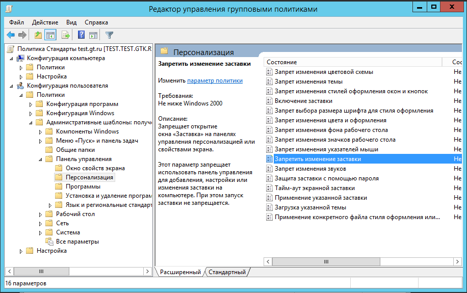

Лабораторная работа №5
- Разверните узел «Конфигурация пользователя\Политики\Административные шаблоны». Просмотрите параметры в этом узле. Прочитайте описание интересующих вас параметров политики. Не вносите изменения в конфигурацию
- В узле «Конфигурация пользователя» щелкните правой кнопкой мыши узел «Административные шаблоны» и выполните команду «Параметры фильтра»
